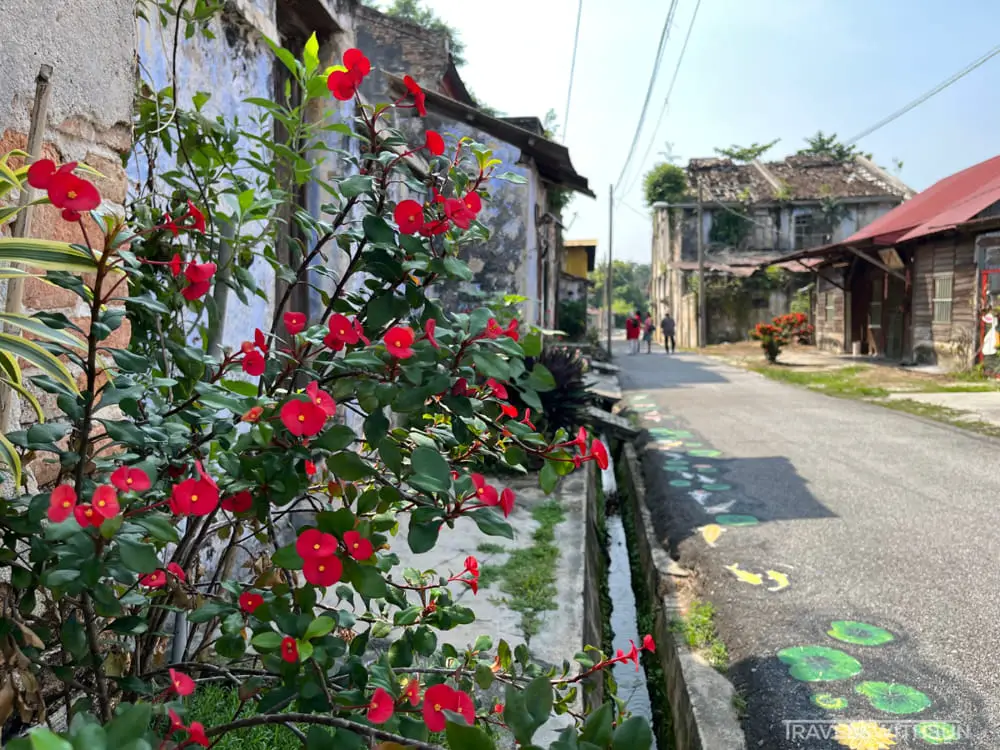

FOODS
Get A Cool Drink
Currently, the notion of Papan Village having a visitor center or a café equipped with air conditioning is purely speculative and lacks any concrete basis. Nevertheless, the coffee shops in this vicinity do provide reasonably priced cold soda. This is very invigorating on a sweltering day after exploring Papan Village.
TRADITIONAL CHAR SIEW PAU

Char siew pau is readily available in almost every area of Perak. However, it is the manner in which they are constructed that sets them apart from the rest.The food is cooked by steaming it using a fire primarily fueled by charcoal. In addition, the steamed buns are given an unusual flavor by the traditional way of preparation employing steaming. These can be acquired in the morning at one of the two coffee establishments situated in Papan Village. It is crucial to consider that they may be fully depleted by the afternoon.